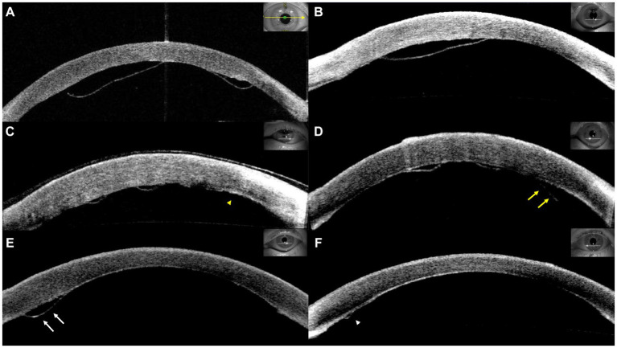
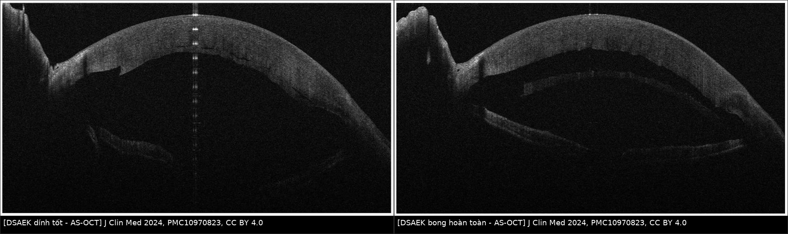
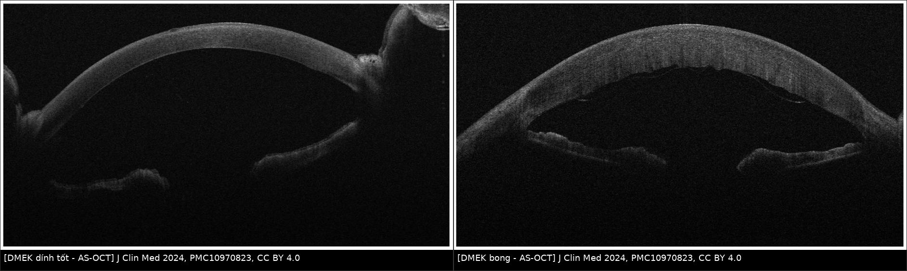
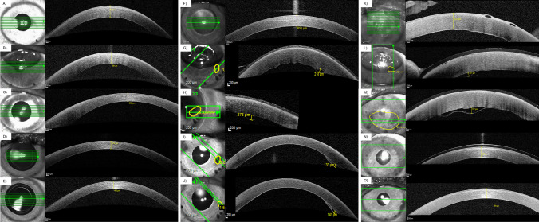
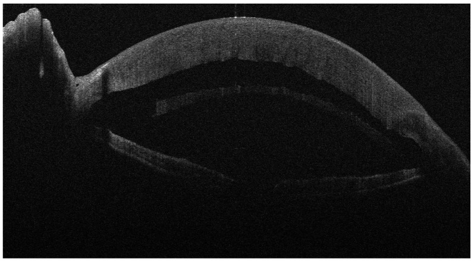
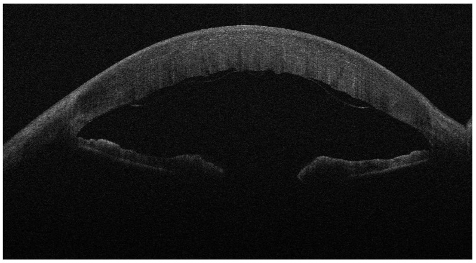

1445 — Bong mảnh ghép nội mô sau DSAEK/DMEK: theo dõi hay rebubble / Graft detachment after endothelial keratoplasty
Tags: pattern:bong-manh-ghep pattern:phu-giac-mac pattern:mo-ghep-giac-mac vung:mat vung:giac-mac vung:tien-phong protocol:AS-OCT protocol:den-khe protocol:rebubble score:detachment-area
Mức chắc chắn (certainty): tổng hợp y văn (literature synthesis) — 1 đoàn hệ 265 ca DSAEK về tỷ lệ bong theo môi trường bảo quản (PMC11986399), 1 sổ bộ đăng ký quốc gia 752 ca DMEK (PMC9763158), 1 đoàn hệ 80 mắt DSEK/DSAEK được rebubble (PMC6951175), 1 đoàn hệ 111 mắt bong nhỏ (PMC10152212), 1 đoàn hệ 52 mắt DMEK với yếu tố nguy cơ (PMC10881667), 1 đoàn hệ 45 mắt DMEK theo dõi CCT/AS-OCT (PMC11377527), 1 nghiên cứu kỹ thuật preload (PMC11265172), 1 ca khí di chuyển ra dịch kính (PMC13386901) và 1 ca interface fluid sau DSAEK thất bại (PMC9294039). Phần phân độ 3 bậc dưới đây là tổng hợp ngưỡng từ các đoàn hệ trên [suy luận], không phải một hệ phân độ chính thức đã được hiệp hội phê chuẩn.
Vì sao bài này quan trọng: đây là biến chứng sớm thường gặp nhất của mọi phẫu thuật ghép nội mô giác mạc — 19% trong sổ đăng ký Hà Lan (PMC9763158) và 32,7% ở một đoàn hệ DMEK (PMC10881667). Câu hỏi thực hành không phải "có bong không" mà là "bong này có cần can thiệp không": rebubble mảnh ghép nhỏ không cải thiện thị lực (PMC10152212) nhưng rebubble lại làm tăng mất tế bào nội mô và tăng nguy cơ thất bại mảnh ghép 4,28 lần (PMC9763158). Bỏ sót bong trung tâm/trục thị giác thì mảnh ghép xơ dính, phù giác mạc vĩnh viễn; rebubble quá tay thì mất mảnh ghép vốn còn tốt.
1. Tổng quan bệnh học – cơ chế hình ảnh
1.1. Ghép nội mô không chỉ, dính bằng ba lực
- DSAEK (Descemet stripping automated endothelial keratoplasty) thay Descemet + nội mô + một lớp nhu mô sau (mảnh ghép dày, thường 100–200 µm; nhóm > 150 µm có trung vị 186 µm trong PMC12356417). DMEK (Descemet membrane endothelial keratoplasty) chỉ thay Descemet + nội mô — mảnh mỏng, đàn hồi và cuộn lại khi không bị ép.
- Không có chỉ khâu: mảnh ghép dính nhờ ba cơ chế: (1) bơm nội mô (Na⁺/K⁺-ATPase) hút dịch khỏi mặt phân cách; (2) sức căng bề mặt của bóng khí trong tiền phòng ép mảnh ghép vào nhu mô nền; (3) áp lực thủy tĩnh của tiền phòng giữ mảnh ghép.
- Hệ quả vật lý: bất cứ thứ gì chèn giữa mảnh ghép và nhu mô nền — dịch, máu, mảnh Descemet của người nhận, bọt khí nhỏ, silicone — đều tạo một lớp dịch liên tục ngăn bơm nội mô. Lớp dịch này không tự thoát vì không có đường dẫn lưu, nên bong lan ra theo trọng lực và theo động tác dụi mắt.
1.2. TẠI SAO bong mảnh ghép thấy được trên AS-OCT
- AS-OCT (anterior segment OCT) dùng ánh sáng ~1310 nm, phân giải trục 5–10 µm — đủ để tách mảnh ghép (dải tăng phản xạ do collagen/Descemet) khỏi nhu mô nền.
- Khoang bong tối trên AS-OCT vì dịch trong suốt, không tán xạ ánh sáng (không có tế bào/mỡ); ngược lại mảnh ghép và nhu mô tăng phản xạ. Vì vậy "đường đen" giữa hai dải sáng chính là dịch ở mặt phân cách, không phải mô.
- Đo được hai đại lượng quyết định xử trí: diện tích bong (% diện tích mảnh ghép) và chiều cao bong tối đa (µm); kèm vị trí có vào trục thị giác không. Trong đoàn hệ 45 mắt DMEK, chính hai đại lượng này chia được 3 nhóm có tiên lượng khác nhau (PMC11377527).
- Vì sao giác mạc vẫn đục dù chỉ bong một phần: vùng bong mất bơm nội mô → nhu mô ngấm nước → CCT tăng, nếp nhu mô sau (posterior stromal ripples). CCT vì thế là dấu hiệu gián tiếp của bong — nhưng chậm hơn AS-OCT 1 tuần.
1.3. Số liệu định lượng cốt lõi
- Thời điểm: bong cần rebubble được phát hiện lúc 5 ± 2,1 ngày (1–8 ngày) sau DMEK (PMC10881667) — tức cửa sổ vàng là tuần đầu.
- Tỷ lệ bong theo kỹ thuật/môi trường (DSAEK, 265 ca): 32,9% với mảnh pre-cut vận chuyển trong môi trường có dextran; 14,1% với mảnh surgeon-cut; 6,3% với pre-cut không dextran (p = 0,002). Ở nhóm không có yếu tố nguy cơ: 26,9% / 8,3% / 3,6% (PMC11986399).
- Tỷ lệ bong theo kỹ thuật (DMEK): preload endothelium-in 47% vs endothelium-out 28% (p = 0,035) (PMC11265172); 24,4% bong ≥ 1/3 diện tích phải rebubble trong một đoàn hệ 45 mắt (PMC11377527); 32,7% trong đoàn hệ 52 mắt (PMC10881667); 19% trong sổ đăng ký 752 mắt (PMC9763158).
- Yếu tố nguy cơ độc lập (DMEK): tuổi người nhận OR 1,08/năm; đái tháo đường OR 23,8 (95% CI 2,61–217); chỉ định FED OR 6,19; IOP 2 giờ sau mổ thấp OR 1,21 mỗi mmHg và IOP < 20 mmHg OR 25,1 (đa biến); biến chứng trong mổ OR 2,28 (PMC10881667, PMC9763158).
- Hậu quả của rebubble: thất bại mảnh ghép 30% vs 9% (OR 4,28; 95% CI 2,72–6,73) và ECD thấp hơn có ý nghĩa ở 3, 6, 12 tháng (PMC9763158). Nhưng rebubble cứu dính được 96,25% mảnh ghép DSEK/DSAEK bong, 68,75% giữ trong; thất bại 31,25%, sống trung vị 30 tháng (PMC6951175).
2. Mẫu hình + chẩn đoán phân biệt theo vị trí và hình thái (Gamut)
2.1. Theo hình thái bong
- Bong nhỏ ngoại vi (minor/peripheral): dải dịch < 1/3 diện tích, chiều cao < 500 µm, không vào trục thị giác — thường tự dính; rebubble không cải thiện kết cục (PMC10152212).
- Bong trung tâm trong trục thị giác (central): dù diện tích nhỏ, che trục thị giác → thị lực giảm, dễ để lại nếp/xơ trung tâm → chỉ định rebubble.
- Bong tiến triển (progressive): từ ngày 1 đến ngày 8 lan rộng dần (Hình 1, PMC10881667) — bong tiến triển là bong "động", phải can thiệp dù lần đo đầu còn nhỏ.
- Bong toàn bộ (total): mảnh ghép tách hoàn toàn, không còn bơm nội mô → phù nặng; rebubble hoặc ghép lại tùy tình trạng mảnh ghép.
- Bong dạng cuộn (DMEK scroll): mảnh DMEK cuộn thành ống — trên AS-OCT thấy cấu trúc hình vòng/2 lớp; dễ bị đọc là "mảnh ghép lật" hoặc "màng giả".
2.2. Gamut theo nguyên nhân (vì sao bong)
- Khí/bóng khí thoát ra sau (gas escape): gặp ở mắt đã cắt dịch kính (PPV) hoặc IOL cố định củng mạc (SFIOL) — khí chui ra dịch kính → không còn tamponade → bong. Số liệu: khí ra dịch kính 22% tổng thể; SFIOL 63,7% vs PCIOL 6,7% (PMC13386901).
- Tamponade không đủ: bóng khí quá nhỏ, bệnh nhân nằm ngửa nhiều, dụi mắt.
- Dịch/máu/mảnh nhu mô ở mặt phân cách: nhu mô nền không đều, máu tiền phòng, mảnh Descemet còn sót của người nhận.
- Áp lực thấp: IOP 2 giờ < 20 mmHg làm tăng nguy cơ (OR 25,1) — ngược trực giác "hạ áp cho an toàn" (PMC10881667).
- Yếu tố mảnh ghép: mảnh pre-cut có dextran (32,9% vs 6,3%), preload endothelium-in (47% vs 28%), ECD người cho thấp, mảnh ghép lật ngược (DMEK) → bơm nội mô hướng sai phía, không bao giờ dính.

Hình 1 — Bốn hình thái bong mảnh ghép DMEK. (A) bong lớn; (B) bong trung tâm trong trục thị giác; (C, mũi nhọn vàng) ngày 1 → (D, mũi tên vàng) ngày 8: bong tiến triển; (E, mũi tên trắng) ngày 4: bong nhỏ → (F, mũi nhọn trắng) tự dính. Nguồn: Front Med 2024, PMC10881667, CC BY 4.0 — ảnh nguyên bản, không chỉnh sửa.3. Bảng so sánh phân biệt (ma trận đối chiếu)
| Thực thể (entity) | Hình ảnh điển hình (AS-OCT / đèn khe) | Chốt vào (rule-in) | Chốt loại (rule-out) | Gợi ý xác nhận |
|---|---|---|---|---|
| Bong nhỏ ngoại vi | Dải dịch < 1/3 diện tích, cao < 500 µm, ngoài trục thị giác; CCT giảm dần | Khoang dịch khu trú ngoại vi + CCT 1 tuần < 600 µm + BCVA cải thiện | Khoang dịch lan rộng giữa 2 lần chụp → không còn là "nhỏ" | AS-OCT lặp sau 2–3 ngày; không rebubble (PMC10152212) |
| Bong trung tâm/trục thị giác | Dải dịch che trục thị giác, dù < 1/3 diện tích; thị lực không cải thiện | Vị trí trung tâm + BCVA 1 tuần không tăng (chỉ 18,2% nhóm bong ≥ 1/3 cải thiện BCVA) | Dải tối dưới mảnh ghép nhưng ngoài trục → theo dõi | AS-OCT qua trục thị giác + đo CCT lúc 1 tuần (PMC11377527) |
| Bong tiến triển | Diện tích/chiều cao tăng giữa 2 lần chụp; bờ dịch lan | Tăng ≥ 1/3 diện tích hoặc tăng chiều cao | Ổn định/giảm sau 48–72 giờ | Chụp lại 48–72 giờ, đo cùng mặt cắt |
| Bong toàn bộ | Mảnh ghép tách hoàn toàn, khoang dịch lớn; giác mạc phù nặng | Toàn bộ mảnh ghép tách khỏi nhu mô | Mảnh ghép dính trung tâm, chỉ bong chu vi | AS-OCT toàn bộ đường kính; đánh giá mảnh ghép còn dùng được không |
| Interface fluid (dịch mặt phân cách) | Khoang dịch ở mặt phân cách cũ (LASIK/DSAEK), thường hai bên, CCT tăng, IOP cao | IOP cao + tiền sử LASIK/ghép cũ + dịch giảm khi hạ IOP | Dịch không đổi dù IOP về bình thường → nghĩ bong thật | Đo IOP, thử hạ áp; ca PMC9294039 phải ghép lại bằng DMEK |
| Nếp gấp mảnh ghép (graft fold) | Đường tăng phản xạ gấp khúc trong mảnh ghép, không có khoang dịch | Không có khoảng tối dưới mảnh ghép | Có khoảng tối → bong | AS-OCT đối chiếu nhiều mặt cắt |
| Màng giả/mảnh Descemet còn sót | Hai lớp tăng phản xạ song song, không có dịch | Hai lớp Descemet (mảnh ghép + Descemet người nhận) | Một lớp + khoang dịch → bong | AS-OCT độ phân giải cao, đèn khe |

Hình 2 — Trái: DSAEK dính tốt ngày 1, mảnh ghép dày áp sát nhu mô (đường mặt phân cách mảnh). Phải: DSAEK bong hoàn toàn ngày 4, khoang dịch lớn giữa mảnh ghép và nhu mô nền. Nguồn: J Clin Med 2024, PMC10970823, CC BY 4.0 — ảnh ghép letterbox, giữ nguyên tỉ lệ.
Hình 3 — Trái: DMEK dính tốt. Phải: DMEK bong — mảnh ghép mỏng, gợn sóng/cuộn, khoang dịch dưới mảnh; nhu mô dày hơn do phù. Nguồn: J Clin Med 2024, PMC10970823, CC BY 4.0 — ảnh ghép letterbox.4. Protocol chụp + phân độ + quyết định rebubble
4.1. Protocol theo dõi sau ghép nội mô
- Ngày 1: đèn khe + AS-OCT (mặt cắt qua trung tâm và 4 kinh tuyến, đo CCT, diện tích bong %, chiều cao bong tối đa µm), đo IOP (đặc biệt IOP 2 giờ sau mổ).
- Ngày 3–5: lặp AS-OCT nếu ngày 1 có bất kỳ dải dịch nào — vì bong tiến triển thường lộ rõ trong tuần đầu (5 ± 2,1 ngày).
- Tuần 1: đo CCT. Ngưỡng thực hành từ PMC11377527: nếu CCT < 600 µm, giảm so với trước mổ, BCVA cải thiện và không có nếp nhu mô sau → rất khó có bong ≥ 1/3 cần rebubble (90% nhóm không bong đạt CCT < 600 µm, so với 50% nhóm bong < 1/3 và 36,4% nhóm bong ≥ 1/3).
- Khi CCT ≥ 600 µm hoặc không giảm: soi chu vi mảnh ghép bằng đèn khe + AS-OCT — vì bong ngoại vi là nơi dễ bỏ sót nhất.
- Không chụp AS-OCT thay đèn khe: AS-OCT bỏ sót bong sát chu vi ngoài đầu dò và không đánh giá được mảnh ghép lật ngược (cần đèn khe thấy mặt nội mô xù xì/không đều).

Hình 4 — Cách đo chuẩn trên AS-OCT: mỗi lần chụp đo CCT, diện tích bong và chiều cao bong tối đa; ba cột là ba nhóm không bong (A–E), bong < 1/3 (F–J) và bong ≥ 1/3 phải rebubble (K–O), theo các mốc trước mổ, 1 ngày, 1 tuần, 1 tháng, 6 tháng. Nguồn: Graefes Arch Clin Exp Ophthalmol 2024, PMC11377527, CC BY 4.0 — ảnh nguyên bản.4.2. Phân độ thực hành 3 bậc [suy luận — tổng hợp ngưỡng]
| Bậc | Diện tích bong | Chiều cao tối đa | Vị trí | Xử trí |
|---|---|---|---|---|
| 1 — Nhỏ | < 20–1/3 diện tích mảnh ghép | < 500 µm | Ngoài trục thị giác | Theo dõi AS-OCT 2–3 ngày; không rebubble (PMC10152212) |
| 2 — Trung bình | 1/3–1/2 diện tích | 500–1.000 µm | Có thể vào rìa trục thị giác | Cân nhắc rebubble nếu không giảm sau 72 giờ hoặc thị lực không cải thiện |
| 3 — Lớn/toàn bộ | ≥ 1/2 hoặc toàn bộ | > 1.000 µm hoặc mảnh cuộn | Trung tâm/trục thị giác | Rebubble (khí/20% SF₆); nếu thất bại → ghép lại |
4.3. Kỹ thuật rebubble và ngưỡng thành công
- Khí dùng: không khí hoặc 20% SF₆ (PMC10152212); bóng khí phải phủ toàn bộ mảnh ghép — kiểm tra bằng AS-OCT/đèn khe theo tư thế nằm ngửa.
- Thành công: dính lại 70% trong sổ đăng ký DMEK (PMC9763158); 96,25% dính ngay sau rebubble ở DSEK/DSAEK, nhưng chỉ 68,75% giữ được mảnh trong lâu dài (PMC6951175).
- Thất bại/lặp: 3 mắt cần rebubble lần 2, 2 mắt ghép lại DSEK, 4 mắt phải ghép xuyên (PK) trong đoàn hệ 80 mắt (PMC6951175).
- Giá phải trả: thất bại mảnh ghép 30% vs 9% (OR 4,28) và ECD thấp hơn ở 3/6/12 tháng — nên chỉ rebubble khi có chỉ định, không "rebubble cho chắc" (PMC9763158).
flowchart TD
A["Sau DSAEK/DMEK: AS-OCT ngày 1 + đo IOP 2 giờ"] --> B{"Có khoang dịch dưới mảnh ghép?"}
B -->|Không| C["Theo dõi: CCT + BCVA tuần 1"]
B -->|Có| D{"Diện tích, chiều cao, vị trí?"}
D -->|"< 1/3, < 500 µm, ngoại vi"| E["Theo dõi 48–72 giờ, chụp lại AS-OCT"]
D -->|"Trung tâm/trục thị giác"| F["Rebubble khí hoặc 20% SF6"]
D -->|"≥ 1/3 hoặc tiến triển"| F
E --> G{"Tiến triển hoặc BCVA không cải thiện?"}
G -->|Không| C
G -->|Có| F
F --> H{"Dính sau 1–2 lần rebubble?"}
H -->|Có| C
H -->|Không| I["Ghép lại DSAEK/DMEK hoặc PK"]
4.4. Dự phòng (dựa trên yếu tố nguy cơ đã chứng minh)
- Duy trì IOP 2 giờ ≥ 20 mmHg — tránh hạ áp quá mức vì IOP < 20 mmHg làm tăng nguy cơ bong OR 25,1 (PMC10881667).
- Chọn mảnh ghép: ưu tiên pre-cut không dextran (6,3% vs 32,9%) (PMC11986399); với DMEK, endothelium-out giảm rebubble so với endothelium-in (28% vs 47%) (PMC11265172).
- Mắt đã PPV/SFIOL: dự trù khí thoát ra dịch kính (63,7% ở SFIOL) → cân nhắc tăng thể tích khí, tư thế, hoặc kỹ thuật giữ khí (PMC13386901).
- Kiểm soát đường huyết ở bệnh nhân đái tháo đường (OR 23,8) và cảnh báo không dụi mắt tuần đầu.
5. Biến thể bình thường và cạm bẫy
- Bong nhỏ tự dính là "biến thể lành tính": trong đoàn hệ 111 mắt, 54 mắt bong nhỏ tự dính không can thiệp; rebubble không cải thiện CCT/ECD và thị lực chỉ hơn 0,22 logMAR — với chiều cao < 500 µm, nhóm tự dính còn tăng BCVA 0,39 logMAR so với 0,62 ở nhóm rebubble (p = 0,045) (PMC10152212).
- Cạm bẫy 1 — "interface fluid" bị đọc là bong: ở mắt có mặt phân cách cũ (LASIK, DSAEK cũ), dịch tích ở mặt phân cách do IOP cao/mất bù nội mô; hạ IOP làm dịch giảm. Ca PMC9294039 cho thấy ghép lại bằng DMEK giải quyết được, nhưng phải kiểm soát IOP tích cực sau mổ.
- Cạm bẫy 2 — bong ở mắt PPV/SFIOL do khí thoát: bóng khí biến mất khỏi tiền phòng trong vài giờ; nếu chỉ nhìn "không còn bóng khí" mà kết luận "đã tamponade đủ" thì bỏ sót nguyên nhân bong.
- Cạm bẫy 3 — nếp gấp giả bong: nếp nhu mô sau (posterior stromal ripples) chỉ là đường tăng phản xạ, không có khoảng tối; không rebubble vì rebubble không làm phẳng nếp.
- Cạm bẫy 4 — mảnh DMEK lật ngược: mặt nội mô hướng ra tiền phòng → không bao giờ dính dù rebubble nhiều lần; nhận ra nhờ đèn khe thấy bề mặt mảnh ghép xù xì và bong tái phát ngay sau mỗi lần rebubble.
- Cạm bẫy 5 — vòng xơ co kéo muộn: bong muộn (> 1 tháng) hiếm khi do dịch đơn thuần; nghĩ màng xơ dưới mảnh ghép, mảnh Descemet còn sót hoặc tăng sinh nội mô — cần AS-OCT độ phân giải cao trước khi rebubble.
6. Tự lượng giá — Blind Quiz
Ca 1 — Ngày 4 sau DSAEK vì FED: giác mạc phù nhiều, thị lực không cải thiện.

- Gợi ý: bệnh nhân 72 tuổi, DSAEK vì FED, ngày 4 thấy giác mạc đục hơn ngày 1, không đau.
- Câu hỏi: mô tả khoang dịch? Nó nằm ở đâu? Ba chẩn đoán phân biệt? Xử trí?
Bấm để hiện đáp án (findings + chẩn đoán)
- Dấu hiệu: mảnh ghép dày tách hoàn toàn khỏi nhu mô nền, khoang dịch lớn giữa mảnh ghép và nhu mô; giác mạc phù.
- Chẩn đoán: bong mảnh ghép DSAEK toàn bộ — mất bơm nội mô trên toàn bộ diện tích.
- Phân biệt: interface fluid (mặt phân cách cũ, IOP cao), nếp gấp mảnh ghép (không có khoảng dịch), màng Descemet còn sót (hai lớp, không dịch).
- Xử trí: rebubble khí/20% SF₆; nếu thất bại → ghép lại. Kiểm tra IOP 2 giờ vì IOP thấp làm tăng nguy cơ.
- Nguồn ảnh: J Clin Med 2024, PMC10970823, CC BY 4.0.
Ca 2 — Ngày 5 sau DMEK ở mắt đã cắt dịch kính: đã rebubble 1 lần, vẫn mờ, AS-OCT còn khoang dịch.

- Gợi ý: bệnh nhân đái tháo đường, mắt đã cắt dịch kính (PPV) trước đó; bóng khí trong tiền phòng biến mất sau vài giờ.
- Câu hỏi: mô tả mảnh ghép? Vì sao rebubble thất bại? Hai nguyên nhân cơ học phải loại trừ? Bước tiếp theo?
Bấm để hiện đáp án (findings + chẩn đoán)
- Dấu hiệu: mảnh ghép mỏng, gợn sóng/cuộn, tách khỏi nhu mô với khoang dịch dưới mảnh; nhu mô dày do phù.
- Vì sao thất bại: (1) khí thoát ra dịch kính ở mắt đã PPV → không còn tamponade (khí ra dịch kính 22% tổng thể; PPV là yếu tố nguy cơ, p = 0,014); (2) mảnh ghép lật ngược → mặt nội mô hướng sai, không bao giờ dính.
- Bước tiếp: kiểm tra hướng mảnh ghép bằng đèn khe (mặt nội mô xù xì), tăng thể tích khí/đổi chiến lược tamponade và tư thế; nếu vẫn thất bại → ghép lại. Kiểm soát đường huyết (đái tháo đường OR 23,8).
- Nguồn ảnh: J Clin Med 2024, PMC10970823, CC BY 4.0.
Ca 3 — Bốn bệnh nhân cùng ngày chụp AS-OCT sau DMEK: ca nào theo dõi, ca nào rebubble?
- Gợi ý: mỗi panel là một mắt khác nhau, cùng một bác sĩ chụp, cùng mặt cắt qua trung tâm.
- Câu hỏi: gọi tên hình thái ở A, B, C→D, E→F? Ca nào không cần rebubble? Vì sao C→D khác E→F?
Bấm để hiện đáp án (findings + chẩn đoán)
- Dấu hiệu: A bong lớn; B bong trung tâm trong trục thị giác; C→D khoang dịch lan rộng và cao thêm từ ngày 1 đến ngày 8; E→F bong nhỏ ngày 4 rồi tự dính.
- Xử trí: A, B, C→D cần rebubble (A/B vì diện tích hoặc vị trí trục thị giác; C→D vì tiến triển). E→F theo dõi — bong nhỏ < 500 µm ngoại vi tự dính, rebubble không cải thiện kết cục (PMC10152212).
- Chốt: bong "động" (tiến triển) nguy hiểm hơn bong "tĩnh" cùng kích thước — phải chụp lại để phân biệt, không quyết định bằng một lần đo.
- Nguồn ảnh: Front Med 2024, PMC10881667, CC BY 4.0.
Bài liên quan chéo
- 400 – Tổng quan Mắt & thị giác
- 1428 – Phù giác mạc mất bù sau implant corticoid lạc vào tiền phòng (bối cảnh mắt đã PPV/SFIOL, DSAEK ưu tiên)
- 1411 – Tăng nhãn áp do corticoid nội nhãn (IOP sau mổ và interface fluid)
- 1452 – Glôcôm do thể thủy tinh chưa mổ (phù giác mạc — phân biệt nguyên nhân nội mô)
Ảnh
- Tên file:
1445_slug_Modality_SourceID.jpg; nguồn + giấy phép từng ảnh trongimages/CREDITS.md. - Ảnh ghép:
images/composite_dsaek-attached-vs-detached.jpg,images/composite_dmek-attached-vs-detached.jpg(tạo bằngtools/make_composite.py, letterbox giữ tỉ lệ).
Không dùng để chẩn đoán độc lập khi chưa có người hướng dẫn.